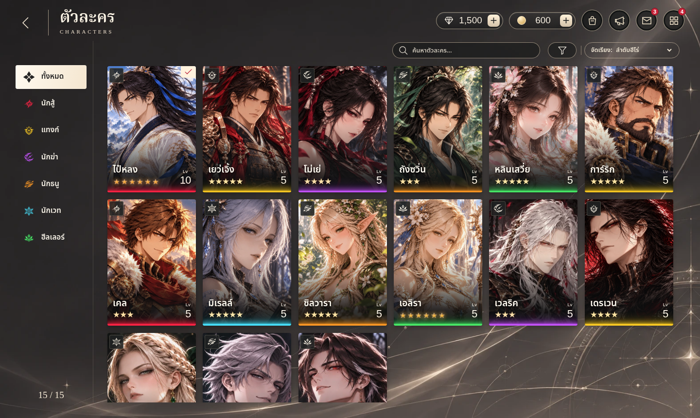
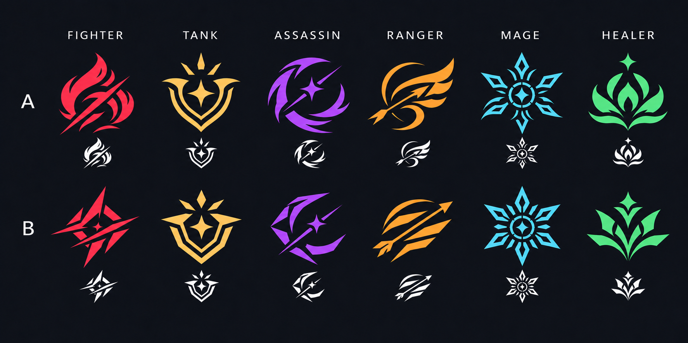
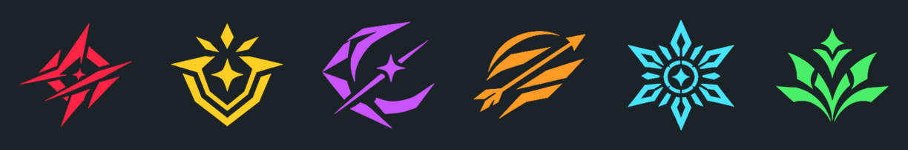
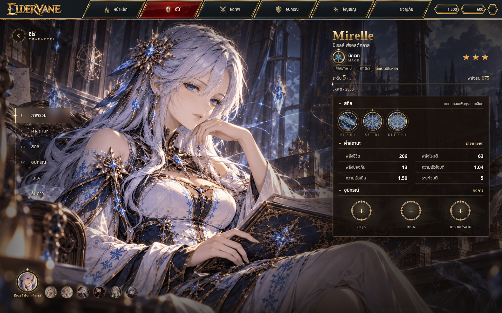
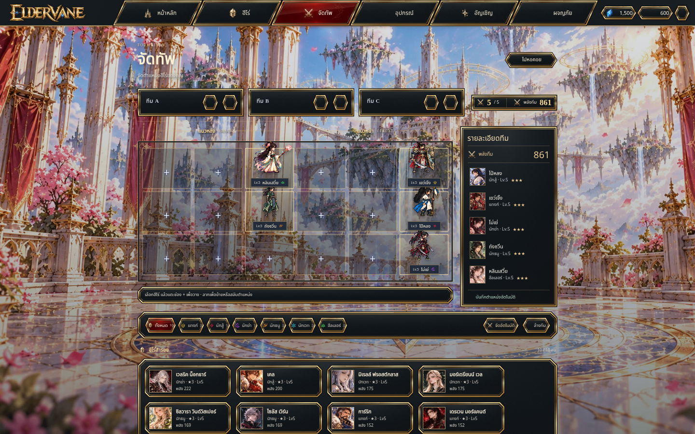
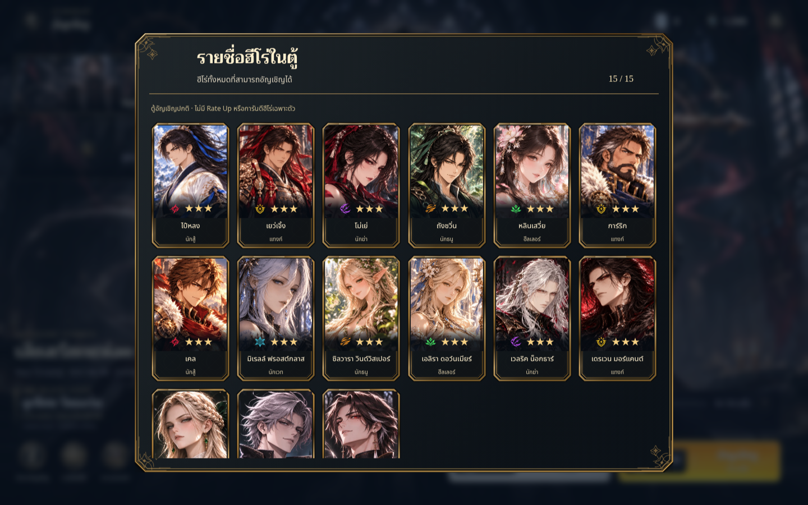
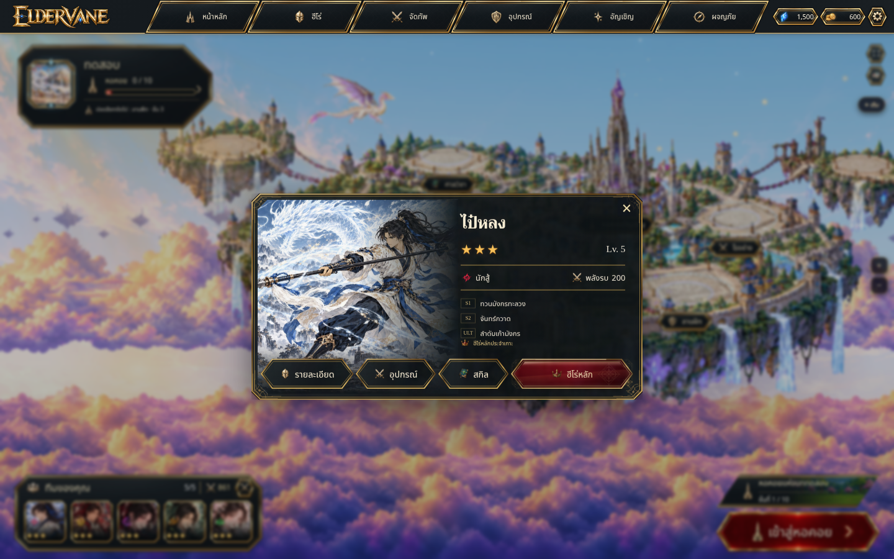

ตัดรูปทรงจาก B แถวล่างที่ผู้ใช้เลือกโดยตรง ไม่วาดหรือ gen รูปทรงใหม่ ไอคอนทั้ง 6 ใช้ไฟล์กลางชุดเดียวกัน กรณีบนการ์ด/ตัวเลือกใช้สีตามบริบทจาก alpha เดียวกัน







ภาพ actual ทั้งหมดถ่ายจากเกมจริง ไม่รีทัช ใช้เซฟ QA แยกจากผู้เล่น บางชุดแสดงดาว/เลเวลต่างกันเพราะเป็น fixture QA คนละการทดสอบ ไม่มีการเปลี่ยนข้อมูลผู้เล่นหรือบาลานซ์
Desktop เท่านั้น · ยังไม่ merge/deploy